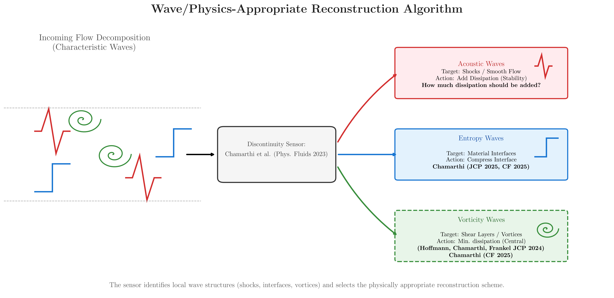
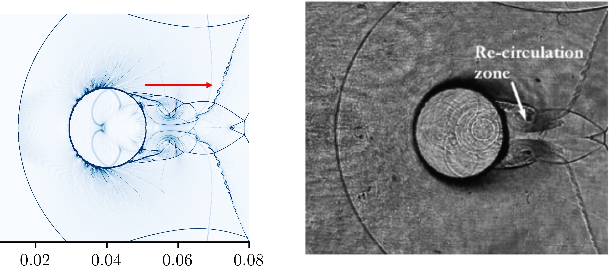
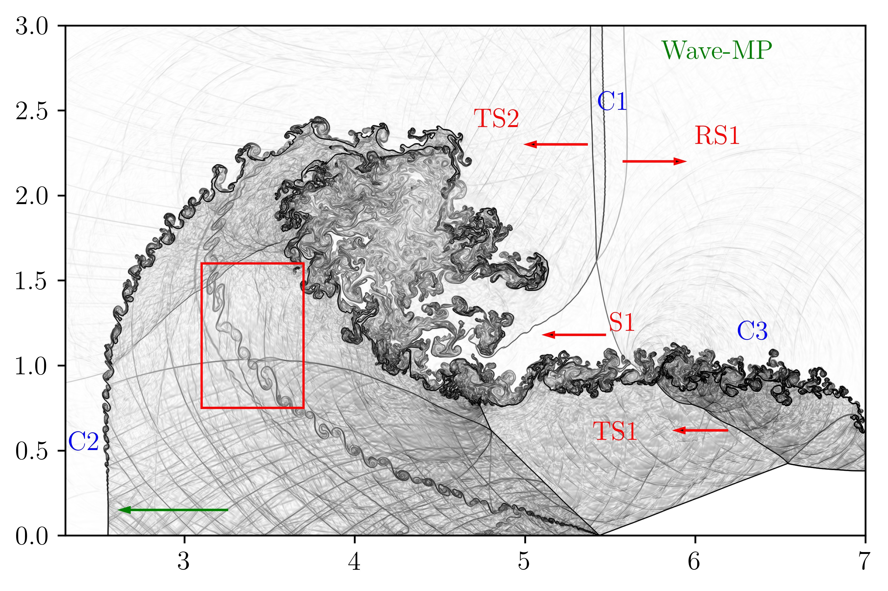

Sainadh Chamarthi
I am a Postdoctoral Scholar at the California Institute of Technology, working in the area of computational fluid dynamics with a focus on hypersonic heat transfer and compressible flow simulations.
My research develops wave-appropriate numerical methods — physics-informed reconstruction schemes that treat vortical, entropy, and acoustic wave families according to their distinct physical character, rather than applying a single scheme uniformly.
Previously, I was a propulsion engineer at ISRO, where I worked on a wide variety of propulsion related problems, and a Postdoc at the Technion – Israel Institute of Technology, where I developed high-fidelity numerical methods for compressible flows.


Wave-Appropriate Numerical Methods
Physics-constrained reconstruction schemes that treat vortical, entropy, and acoustic waves distinctly.

Hypersonic Flows & Heat Transfer
DNS and LES of hypersonic shock-boundary layer interactions.

Compressible Multiphase Flows
Gas-liquid flow simulations.
Hall thruster
Low temperature plasmas with anisotropic diffusion (typically seen in spacecraft propulsion systems).

High-Performance Computing
Fortran CFD solvers with MPI and OpenACC for GPU architectures.
- Japanese Government Scholarship (MEXT), University of Tokyo
- MHRD Scholarship by the Government of India, IIT Bombay
Happy to talk about research collaborations, seminars, and positions in computational fluid dynamics, physics-informed simulations.